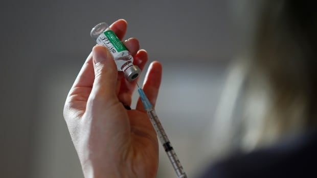

Why restricting AstraZeneca vaccines in Canada means balancing 'vaccine risk vs.disease risk'
Canada's decision to suspend the use of the AstraZeneca-Oxford vaccine in Canadians under 55 during a surging third wave and a slow vaccination rollout is a calculated risk.
The National Advisory Committee on Immunization (NACI)
updated its guidance
to provinces and territories against the use of the vaccine for younger Canadians on Monday, following reports of
rare but potentially fatal blood clots in Europe
connected to the shot.
Health Canada says the benefits of the vaccine to protect against COVID-19 still outweigh the potential risks, with more than 300,000 doses of the shot administered and no cases of the serious clotting condition, known as
vaccine-induced prothrombotic immune thrombocytopenia
(VIPIT), in Canada.
But the decision to restrict the use of one of four approved vaccines at a time when COVID-19 levels are rising again in Canada's hardest hit provinces is a tough pill to swallow for some.
'It can be a very powerful tool when we're at this stage of the pandemic where we're talking about, in hotspots at least, the system getting to a point of potential collapse,' said Dr. Susy Hota, an infectious disease specialist at the University Health Network and an associate professor of medicine at the University of Toronto.
'There are humans behind that story, and when you're in a hospital where you're seeing an exponential rise in the number of COVID-positive patients coming in, and your staff to help manage these patients is the same pool of staff — then those numbers aren't adding up.'
But on an individual level, experts say the lack of data on the risk of VIPIT to Canadians from the AstraZeneca vaccine is concerning and NACI was right to err on the side of caution in order to avoid putting lives unnecessarily at risk.
Ontario has
more ICU admissions
than at any other point in the pandemic, B.C. has had its
highest single-day number of new cases
to date, and Quebec saw its
biggest one-day spike
in almost two months as
more transmissible variants
are spreading rapidly across Canada.
The good news is that vaccines work; eight provinces and territories reported
no new deaths in a single day
this week, and the decision to prioritize COVID-19 vaccines in long-term care has led to a dramatic drop in deaths in residents.
The bad news is that the race between vaccines and variants is taking on new urgency; the majority of vulnerable Canadians are still unvaccinated and the
third wave is hitting younger adults harder
and showing no signs of slowing down.
'It's so complicated, because I look at it as being two things: What is the absolute risk of this potentially related severe side effect versus the absolute risk of the disease?'said Dr. Lynora Saxinger, an infectious diseases physician and an associate professor at the University of Alberta faculty of medicine in Edmonton.
'The other consideration is, what is the public backlash to potential outcomes of any particular course of action?'
WATCH | AstraZeneca now only recommended for Canadians over 55:
Health Canada says VIPIT occurs at a rate of about
one in 100,000 people vaccinated
, with a mortality rate of about 40 per cent, although more research is needed and that risk is reduced if treated early enough.The total number of people in Europe who got the rare blood clots after vaccination is small — as of Thursday, dozens of cases have been reported compared to millions who received the shot.
But crucially, the people who appear to have an elevated risk of the rare blood clots are not the same age group most at risk from COVID-19.
'If you look at the average 30 or 40-year-old Canadian, their risk of getting severely ill from COVID based on our current experience is substantially less,' said Dr.Andrew Morris, a professor of infectious diseases at the University of Toronto.
'You're asking them for the good of the country to take on a risk that they wouldn't even get with COVID.So why would you give them a vaccine that is more likely to give them harm than COVID is?It makes no sense.'
Canada has had close to
23,000 COVID-19 deaths
in the year since the pandemic began, but fewer than a thousand of those have been in people under 60 and just over 300 in Canadians under 50.
'What happens to NACI if they say that everything is fine, despite the European experience which really brings it into question, and then we have even one death in Canada from this?'said Morris.'NACI would be just absolutely raked over the coals.'
Dr.David Fisman, an epidemiologist at the University of Toronto's Dalla Lana School of Public Health, said the debate over whether suspending the vaccine in younger Canadians was the right decision is due to a miscalculation of risks for that age group.
'I think what you see is a bit of wire crossing around vaccine risk versus disease risk,' he said.
There is also a risk of clots from getting COVID-19, but that's conditional on getting the disease first, and there are other vaccines to protect against it, he said, rather than using a vaccine linked to adverse events in this age group.
'The adverse effect here is rather devastating,' he said.'[VIPIT] seems to be killing about half the people who suffer these consequences, and is highly likely to cause permanent neurological damage in survivors.'
'Given that these are young people working in healthcare, it is likely that vaccination is conferring damage or death that they would not have suffered otherwise.'
Dr. Menaka Pai, a clinical hematologist at McMaster University and a member of Ontario's COVID-19 Science Advisory Table, says the risks associated with VIPIT in younger adults are dangerous enough to warrant halting its use in those under 55.
'The clots that we see with VIPIT — they're serious.If you're not aware of them they can be hard to diagnose, they can be hard to treat,' she said.
'If you're older and likely to experience all the other horrible things that COVID does, including killing you, then your decision about urgency and needing any vaccine frankly is really different from somebody who is younger and probably better able to weather the storms of COVID.'
WATCH | Should people who've had the AstraZeneca vaccine be concerned?
Pai says critics of NACI's decision are inaccurately drawing comparisons with the risk of VIPIT to the risk of birth control pills, which also carry an increased risk of blood clots.
'The reality is that every year a little under one in 3,000 women will get a blood clot on the combined oral contraceptive pill and every year one in 300 pregnant women will get a blood clot,' she said.
'But the clots that you get on those hormones are very different from the clots that we're seeing related to the AstraZeneca vaccine.'
Raywat Deonandan, an epidemiologist and associate professor at the University of Ottawa, says if the risk from the AstraZeneca-Oxford vaccine to younger Canadians can be mitigated with another COVID-19 shot, then the decision to halt the use of it makes sense.
'This is not the same as going to a place like Brazil where the disease is rampaging out of control,' he said.
'Whereas this is the only vaccine you have available to you — take it now or I can't guarantee you will be alive in a month.It's a different scenario entirely.'
But Deonandan says he can sympathize with critics of NACI's recommendations to suspend the vaccine because of the damage the decision may do to the public perception of COVID-19 vaccine safety overall.
'If you are saving any lives, you're saving one or two lives [from VIPIT],' he said.'On the other hand, you're creating such distrust of the vaccine you may be causing hundreds, possibly thousands of deaths from people not taking the vaccine.'
'But given what NACI's job is, which is to advise how best to deploy vaccines, they used the best evidence and came upon the right decision for their mandate.'
To read the entire Second Opinion newsletter every Saturday morning, subscribe by clicking here.
Adam Miller is a senior health writer with CBC News.He's covered health, politics and breaking news extensively in Canada for over a decade, in addition to several years reporting on news and current affairs throughout Asia.
Posted On: 2021-04-03T08:00:00
Posted By: Adam Miller

Content Date: 2021-04-03
Download Date: 2021-09-16
Document ID: L0C04G4XR